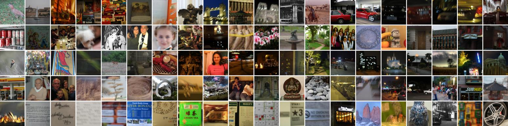
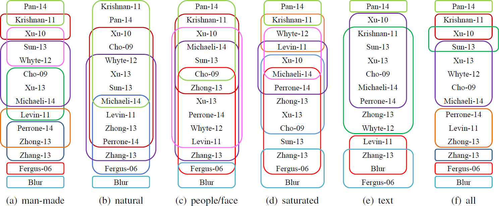
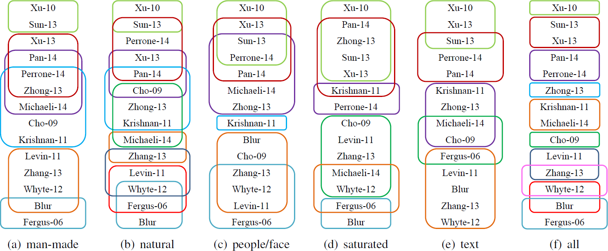
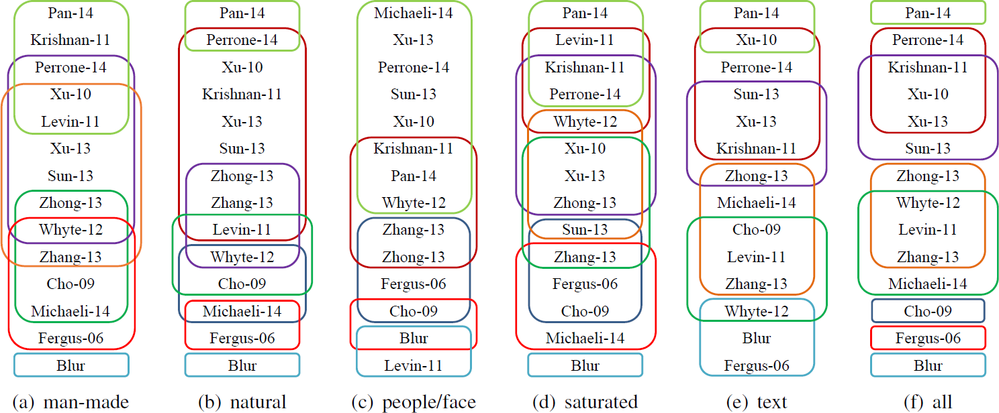

Abstract
Numerous single image blind deblurring algorithms have been proposed to restore latent sharp images under camera motion. However, these algorithms are mainly evaluated using either synthetic datasets or few selected real blurred images. It is thus unclear how these algorithms would perform on images acquired ''in the wild'' and how we could gauge the progress in the field. In this paper, we aim to bridge this gap. We present the first comprehensive perceptual study and analysis of single image blind deblurring using real-world blurred images. First, we collect a dataset of real blurred images and a dataset of synthetically blurred images. Using these datasets, we conduct a large-scale user study to quantify the performance of several representative state-of-the-art blind deblurring algorithms. Second, we systematically analyze subject preferences, including the level of agreement, significance tests of score differences, and rationales for preferring one method over another. Third, we study the correlation between human subjective scores and several full-reference and no-reference image quality metrics. Our evaluation and analysis indicate the performance gap between synthetically blurred images and real blurred image and sheds light on future research in single image blind deblurring.
Paper
Citation
Wei-Sheng Lai, Jia-Bin Huang, Zhe Hu, Narendra Ahuja, and Ming-Hsuan Yang, A Comparative Study for Single Image Blind Deblurring, IEEE Conference on Computer Vision and Pattern Recognition, 2016.
Bibtex
@inproceedings{Lai-CVPR-2016,
author = {Lai, Wei-Sheng and Huang, Jia-Bin and Hu, Zhe and Ahuja, Narendra and Yang, Ming-Hsuan},
title = {A Comparative Study for Single Image Blind Deblurring},
booktitle = {IEEE Conferene on Computer Vision and Pattern Recognition},
year = {2016}
}
Dataset and Code

Results
- Evaluated algorithms
| Algorithm | Reference |
|---|---|
| Fergus-06 | Fergus et al., Removing camera shake from a single photograph. SIGGRAPH, 2006. |
| Cho-09 | Cho and Lee. Fast motion deblurring. SIGGRAPH Asia, 2009. |
| Xu-10 | Xu and Jia. Two-phase kernel estimation for robust motion deblurring. ECCV, 2010. |
| Krishnan-11 | Krishnan et al. Blind deconvolution using a normalized sparsity measure. CVPR, 2011. |
| Levin-11 | Levin et al. Efficient marginal likelihood optimization in blind deconvolution. CVPR, 2011. |
| Whyte-12 | Whyte et al. Non-uniform deblurring for shaken images. IJCV, 2012. |
| Sun-13 | Sun et al. Edge-based blur kernel estimation using patch priors. ICCP, 2013. |
| Xu-13 | Xu et al. Unnatural L0 sparse representation for natural image deblurring. CVPR, 2013. |
| Zhang-13 | Zhang et al. Multi-image blind deblurring using a coupled adaptive sparse prior. CVPR, 2013. |
| Zhong-13 | Zhong et al. Handling noise in single image deblurring using directional filters. CVPR, 2013. |
| Michaeli-14 | Michaeli and Irani. Blind deblurring using internal patch recurrence. ECCV. 2014. |
| Pan-14 | Pan et al. Deblurring text images via l0-regularized intensity and gradient prior. CVPR, 2014. |
| Perrone-14 | Perrone and Favaro. Total variation blind deconvolution: The devil is in the details. CVPR, 2014. |
- Cumulative frequency of B-T scores
- Scatter plot of B-T scores between datasets
- Significance test (Method grouping)

Real dataset

Synthetic uniform dataset

Synthetic non-uniform dataset